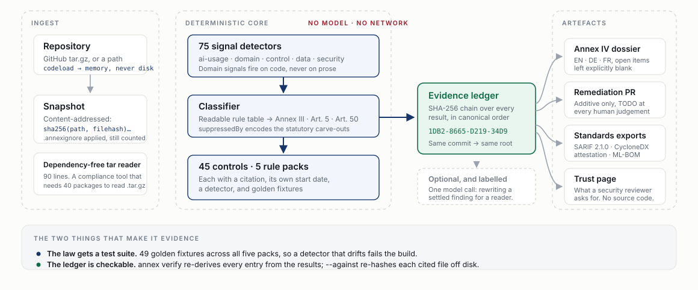

LexHack 2026 · AI Safety, Ethics & Governance
Annex reads your codebase, decides where it falls under the EU AI Act, and proves every obligation with a file, a line and a hash.
Shivam Gupta · github.com/shi1720/LexHack
ANNEX1The problem
Nobody has ever checked one against the system it describes. That is not a snipe at compliance teams — it is structural. The Act asks whether your system logs inference, whether a human can override it, whether you examined your data for bias. Those answers are in the repository. The people who write the dossier cannot read it, and the people who can were never asked.
In the IAPP's 2026 category census.
One is a GDPR privacy scanner. The other is the phrase "a U.S. codebase".
Of 106 enterprise AI systems studied by appliedAI, the risk tier was unclear.
Why now — and why the obvious answer is wrong
On 27 July 2026 the Digital Omnibus pushed the Annex III high-risk deadline from August 2026 out to 2 December 2027, and the compliance industry exhaled. It left Article 50 exactly where it was.
| 2025-02-02 | Article 5 prohibited practices · €35M / 7% |
| 2025-08-02 | GPAI model obligations |
| 2026-08-02 | Article 50 transparency · €15M / 3% |
| 2023-07-05 | NYC Local Law 144 bias audits |
| 2026-12-02 | Art. 50(2) marking, grandfathered systems |
| 2026-12-02 | New Art. 5 prohibitions (NCII, CSAM) |
| 2027-12-02 | Annex III high-risk — moved from Aug 2026 |
| 2028-08-02 | Annex I embedded high-risk |
If your product talks to a person or generates content, you have been in scope since August. The deadline nobody is talking about is the one that already passed.
ANNEX3What it does
PROHIBITED Article 5(1)(f) — emotion inference in the workplace classification Annex III, point 4(a) · recruitment and candidate selection 97% confidence src/screening/rank.ts:28 const decision = candidateScore >= ADVANCE_THRESHOLD ? 'advance' : 'reject'; ✖ missing Art. 5(1)(f) IN FORCE emotion inference from video interviews ✖ missing Art. 50(1) IN FORCE the chat UI never says it is an AI ✖ missing Art. 14 human oversight — no review step, no override, no stop control ✖ missing LL 144 §5-301 no independent bias audit in the last twelve months conformity █░░░░░░░░░░░░░░░░░░░░░░░░░░░ 2/100 in force today 1/100 exposure €20,000,000 statutory ceiling (GDPR Art. 83(5)) · EU AI Act €294,000 ledger 4AA4-7D3B-BA5D-D7D7 14 files · 99 ms
Statute on the left, the lines that answer it on the right.
Headings in EN · DE · FR, every unanswerable point left open.
Additive files that close what code can close.
SARIF, CycloneDX attestation, ML-BOM.
The reframe
A frontier model can draft a plausible Annex IV document this afternoon. What it cannot do is tell you whether the document is true. So we built for verification, and two things follow from that.
A control is a function, so it can be tested. 61 golden fixtures across all five packs — each a minimal repository and the status the control must return — plus a suite that checks every control against a written-down Article 113 table. If a regex gets greedier, the obligation fails the build rather than silently mis-reporting somebody's conformity.
Every result is hashed into a chain: the control, its status, the rule-pack version, the SHA-256 of every file it cites. The root goes on the dossier's front page. Re-run on the same commit and you get the same root. annex verify re-derives every entry from the results the report describes, so an edited status stops matching, and --against re-hashes each cited file off disk. A checksum chain, not a signature — it makes a silent edit detectable, not impossible.
That is the whole difference between a document and a proof.
ANNEX5The thing only a code-grounded tool can do
Article 3(23): a change affecting compliance with Chapter III Section 2 is a substantial modification; Article 43(4) re-opens the conformity assessment.
$ annex diff --base fixtures/hireflow-remediated --head fixtures/hireflow SUBSTANTIAL MODIFICATION fixtures/hireflow-remediated → fixtures/hireflow The risk classification moved from high to prohibited. A change in the intended purpose is a substantial modification on the face of Article 3(23), and Article 43(4) then requires the conformity assessment to be re-opened and the technical documentation updated. conformity 81 → 3 (-78) tier high → prohibited ✖ No emotion inference in the workplace or education not_applicable → missing eu-ai-act.art5.emotion-workplace … 36 more regressions; pass --all to list them
In CI: --base origin/main --head HEAD, exit 1. A questionnaire cannot do this — and it is the event that makes the revenue recurring.
ANNEX6How it works

Accuracy
45 hand-labelled cases. Roughly half exist to catch false positives: card-fraud detection (excluded from Annex III 5(b)), one-to-one identity verification (excluded from 1(a)), campaign logistics (excluded by 8(b) — nobody sees the output), invoice OCR (Art. 50(2) does not reach re-expression), a mood-journal app that is 1(c) high-risk and not the Art. 5(1)(f) prohibition, and a blog post about prohibited practices.
These labels were written by the people who wrote the detectors. The report says so, and five cases exist to find the edge: a lending decision expressed only in SQL, and a chatbot whose AI-ness may or may not be “obvious to a reasonably well-informed person”.
Domain signals firing on prose; a missing Art. 50(2) rule; broken go.mod parsing; an Art. 50(2) carve-out stated in the caveat and never implemented. Then the self-scan found a GDPR Article 17 gap in us — which we fixed.
Who buys it
| Who | What they feel | What Annex gives them |
|---|---|---|
| Engineering lead | "Legal keeps asking me questions about our own code." | A CI check and a pull request. Zero procurement. |
| Founder / CTO | "An enterprise deal is blocked on an AI governance questionnaire." | A trust page to send back today. |
| Legal / compliance | "I am signing a document I cannot verify." | Evidence with a citation and a hash. |
Free — CLI, GitHub Action, SARIF, classification.
$35/contributor/mo — blocking PR check, remediation, drift.
$12–25k per governed AI system/yr — dossier, attestation, freshness.
$75–250k — enterprise, self-hosted, custom detectors.
€9,900 boutique readiness sprint · $15–50k consultancy · €75k+ Big-4 programme · €10–40k third-party conformity assessment per system · €193–330k to stand up a QMS, plus €71k/year (EC impact assessment).
Moat — and the honest weaknesses
Built for this hackathon
| EU AI Act | 27 obligations · post-Omnibus dates |
| GDPR | 5 · Arts. 9, 13–17, 22, 35 |
| NYC Local Law 144 | 5 · the arithmetic is in the rule |
| Colorado ADMT Act | 5 · SB 26-189, from Jan 2027 |
| NIST AI RMF 1.0 | 6 · version-pinned subcategories |
The engine never calls one. Classification and control evaluation are rule-based and offline, because an auditor cannot accept "the model thought so" as evidence.
There is exactly one model call, labelled model-written in the UI: rewriting an already settled finding for an engineer, a founder or an assessor. It receives the decision as fact and cannot change it.
What's next
The CLI and SARIF output already work in CI. The App turns a scan anyone can ignore into a gate nobody can. After that, the question that decides whether this is a product or a demo is whether an assessor — TÜViT, Nemko, Bureau Veritas — will accept code-grounded evidence as a starting artefact. That is a question about institutions, not code, and it is answered by knocking on doors.
Shivam Gupta · LexHack 2026 · github.com/shi1720/LexHack
ANNEX12